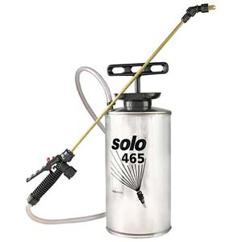

Over a period of several years, I went through multiple garden compression sprayers. They were all small ones with plastic tanks, ranging from inexpensive to moderately priced, and all of them failed prematurely. They tended to leak once pressurized, the flimsy nozzles inevitably fell apart and the plastic tanks were difficult to clean after use.
Instead of continuing to buy disposable sprayers yearly, I finally purchased a nice sprayer with a stainless steel tank and a brass spray nozzle. I paid $50 for a 1.5-gallon model. It’s robust enough for all-season work around the homestead and is easy to clean and maintain. I’ve used mine for three years spraying fruit trees and plantings without any problems.
While a premium compression sprayer is probably durable enough to last indefinitely under ordinary use, I recommend buying a spare parts kit of gaskets and seals for emergencies.
|
 |
|
|